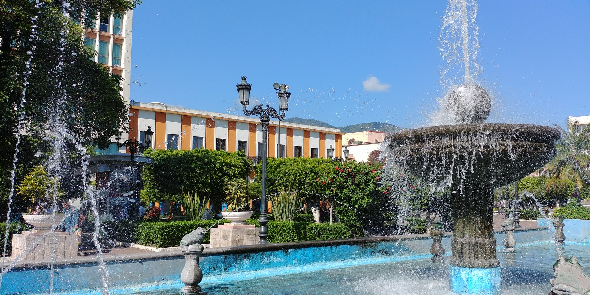
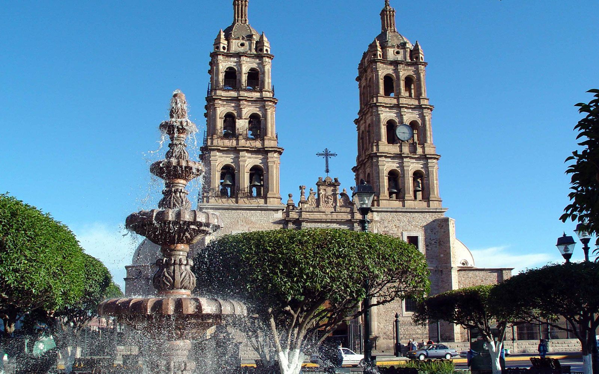
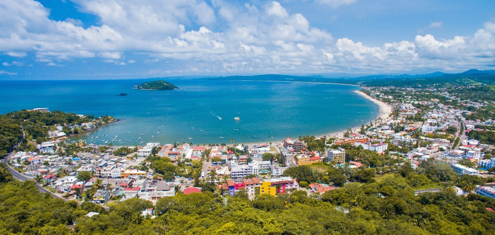
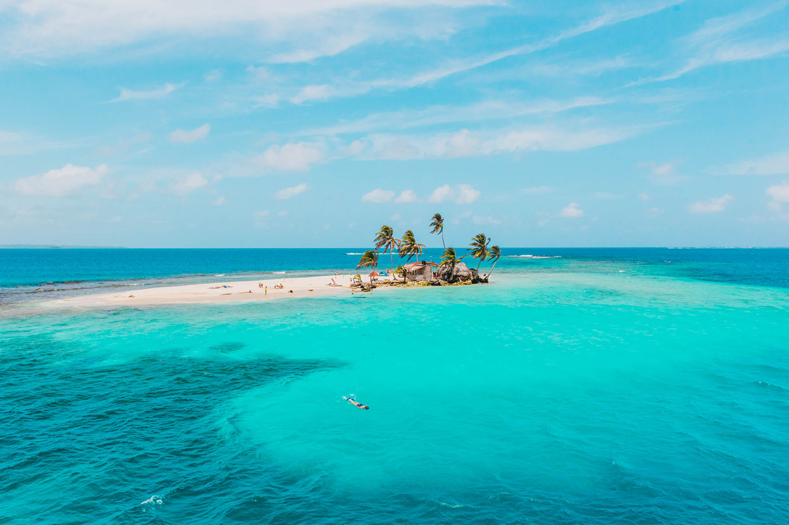
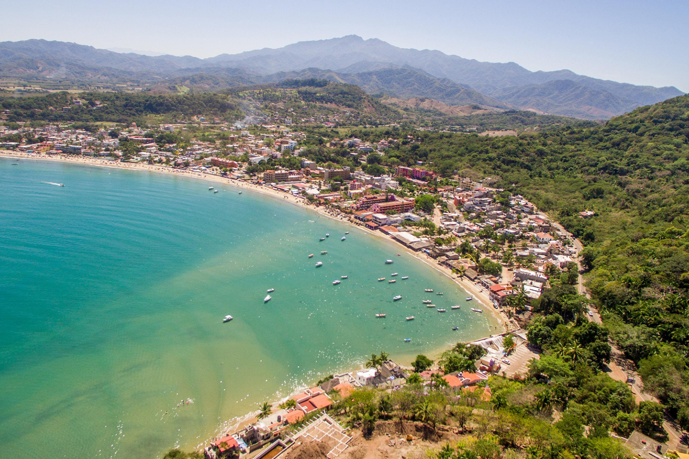
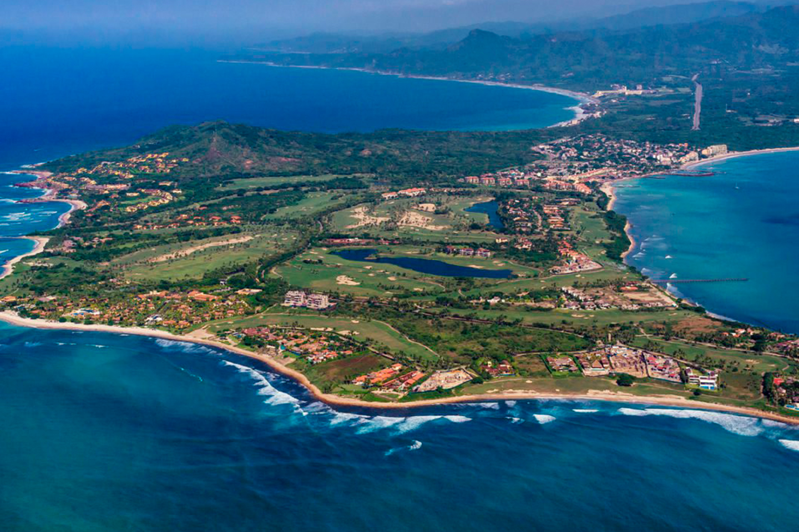

Nayarit.
Se encuentra en la región occidente del país, limita al norte con Durango y Sinaloa y al sur con Jalisco. Descubre su gran variedad de atractivos que lo han hecho popular entre los viajeros de todo el mundo.
En Tepic, la capital, aprenderás de su pasado colonial a través de sus museos, edificios históricos como la Catedral de Tepic y el Exconvento de la Cruz. La ciudad también es sede de diversos festivales de arte, música y gastronomía.
Disfruta de la naturaleza y el sol en sus increíbles playas, visita Punta de Mita, Bucerías, Flamingos, Corral del Risco, Cruz de Huanacaxtle, Jarretaderas, El Anclote, Litibú y San Pancho.
El Pueblo Mágico de Sayulita es el destino predilecto de los surfistas que buscan las mejores olas y un ambiente relajado. Este también es un buen punto de partida para llegar a la playa del amor en el parque nacional Islas Marietas.
Compostela, también Pueblo Mágico, te cautivará con sus hermosas calles y edificios coloniales como el Templo de la Misericordia de San Santiago Apóstol y La Hacienda Miravalles que data del siglo XVI.
La gastronomía nayarita es reconocida como Patrimonio Inmaterial del Estado y su mezcla de sabores la hace única. No dejes de probar el pescado zarandeado, el chicharrón de pescado y de postre una tradicional capirotada

Centro histórico de Tepic
.
Visita la Catedral de Tepic considerado como uno de los edificios más importantes ya que representa el símbolo religioso y civil de esta ciudad. Emblemática por su portada de estilo neogótico, la catedral se encuentra en el mismo lugar en que fue construido el antiguo templo parroquial, el cual se encontraba todavía en perfectas condiciones durante el siglo XVII.

Rincón de Guayabitos.
Con su playa de suave oleaje y arena blanca, Rincón de Guayabitos es uno de los mejores lugares para visitar en Nayarit por también su amplia variedad de alojamientos. Encontrarás desde cabañas rusticas a pie de arenal, hasta hoteles elegantes y modernos.
En la playa se celebra ocasionalmente la ceremonia de liberación de tortuguillos que parten a hacer su vida. Desde ella también salen excursiones de pesca y de avistamiento de ballenas y fauna marina.
Cerca de Guayabitos está la Isla de Coral de aguas transparentes y fondo coralino, por donde nadan bellos y coloridos peces.

San Blas.
Este puerto fue fundado por Nuño Beltrán de Guzmán en 1530, sin embargo el rey Carlos III de España lo reconoció como puerto de altura hasta 1768, mismo año en el partieron de San Blas los frailes franciscanos comandados por Fray Junípero Serra a la Misión de Nuestra Señora de Loreto con el propósito de colonizar las Californias.
En San Blas se estableció la primera aduana marítima del Pacífico y fue el puerto más importante de esta zona en la época de la Colonia.
Y para que conozca de primera mano la historia de San Blas a través de los relatos de sus cronistas, de su gente y su arquitectura, testigo mudo de esos acontecimientos, no olvide visitar los edificios históricos del puerto.
Su recorrido puede comenzar en La Contaduría, un fuerte construido en 1770 en el cerro de San Basilio, donde se establecieron las oficinas de la contaduría de la hacienda colonial

Lo de Marcos.
Es un pintoresco pueblito de la costa nayarita de calles angostas y casas coloridas, cuyos habitantes viven del turismo y del mar. Cuando estés allá verás que los pescadores acostumbran reparar sus redes en la puerta de sus casas.
Las cabañas y hoteles del pueblo son cómodos y de fresca comida recién pescada.
Las playas de Lo de Marcos son calmadas y dejan ver a los pececitos que nadan entre los bañistas. Algunos de sus principales arenales son: Lo de Marcos, Las Minitas, Los Venados y El Atracadero.

Punta de Mita.
Punta Mita es una aldea pesquera y un centro turístico en la costa mexicana del Pacífico. Se ubica en una pequeña península en la Bahía de Banderas. Es conocida por las casas lujosas, los campos de golf y las playas privadas. La playa pública El Anclote está rodeada de restaurantes y tiene un mar con oleaje suave. En el litoral, están las biodiversas Islas Marietas que albergan fauna como la ballena jorobada y el alcatraz patiazul. Al norte se encuentra la tranquila aldea de surf Sayulita.
